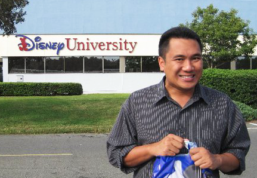
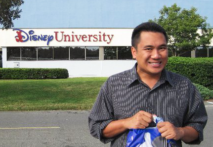

About Us

Jose Flores:
I am a Veteran of the U.S. Coast Guard where I served for 8 years. I am a senior at Point Park University enrolled in the Information Technology program. As a member of the Coast Guard, I performed many jobs and gained a myriad of experience in leadership, technical, analytical, and problem solving skills. As a programmer, I wanted to create a useful website that can help military members transition from one place to another.
Jessica Beitler:
I am a senior IT student here at Point Park where I also play on the softball team. I changed my major from Accounting to IT halfway through my college career and it was a great decision! I have enjoyed learning new technological concepts, working hands on with these concepts, and being part of great projects such as vetMove. Once I am dome with classes this April, I will start working for Magna5 out of Coraopolis as a NOC Engineer and couldn't be more excited.

Jaime Ballesteros:
Interests include technology, Disney, animation, and travel. Originally from Honolulu moved to Pittsburgh in 2016. President of the Information Technology Student Organization on campus and Vice President of the Student Veterans Association Point Park Chapter.The project is important to me because it shows a potential for how to assist people during their move.
Samantha Weir:
I am a senior information technology major here at Point Park University. I am also a member of the women’s basketball team. Just a year ago i switched from an accounting major to IT and it has proved to be a good decision. I plan on furthering my education this fall in Point Park’s graduate program. On top of all of this, I have an 8 month old son named MJ and he is the highlight of my life.
Jose Flores:
Jessica Beitler:

Jaime Ballesteros:
Samantha Weir: